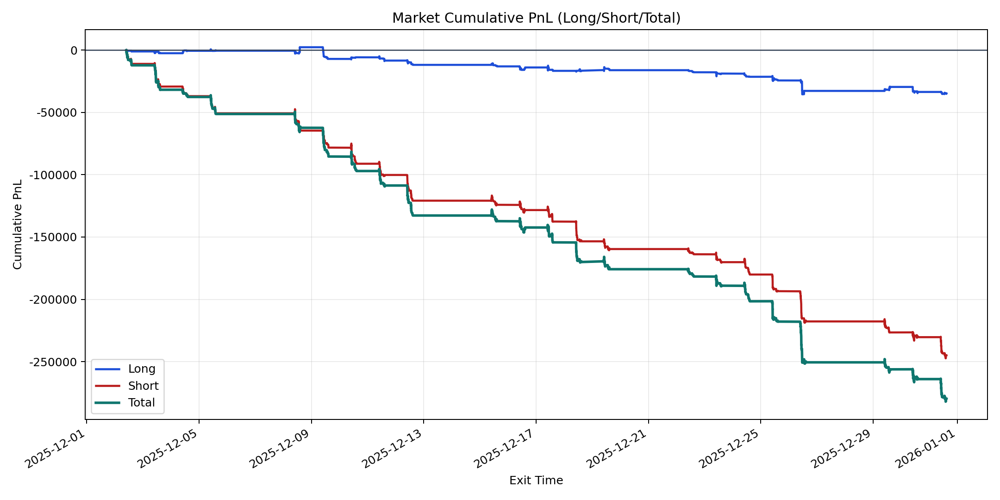
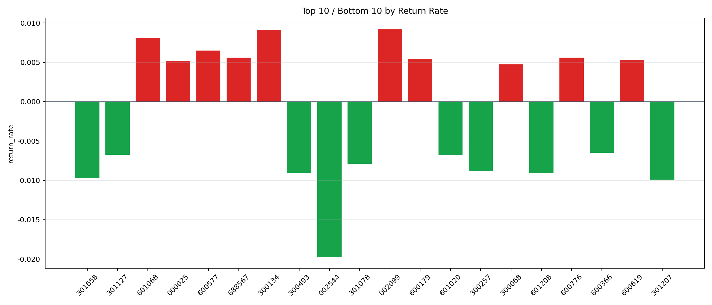

| repo_root | /home/haoranyou/data/output/dynamic_AUM_TAKER_index1000 |
|---|---|
| period_months | 1 |
| period_label | 2025-12-02_to_2025-12-31 |
| start_time | 2025-12-02 09:51:52 |
| end_time | 2025-12-31 14:44:47 |
| n_trades | 10953 |
| n_symbols | 257 |
| total_pnl | -279801.6773500014 |
| long_total_pnl | -34904.396949999355 |
| short_total_pnl | -244897.28040000203 |
| total_entry_notional | 192198018.0 |
| long_entry_notional | 42629897.0 |
| short_entry_notional | 149568121.0 |
| total_return_rate | -0.0014557989736918172 |
| long_return_rate | -0.0008187774169381492 |
| short_return_rate | -0.0016373628201159392 |
| top_symbols_by_return | ["002099", "300134", "601068", "600577", "688567", "600776", "600179", "600619", "000025", "300068"] |
| bottom_symbols_by_return | ["002544", "301207", "301658", "601208", "300493", "300257", "301078", "601020", "301127", "600366"] |

